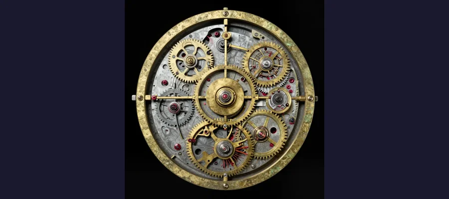

The Antikythera Mechanism: An Ancient Computer!

The Antikythera Mechanism - a 2,000-year-old computer found in a shipwreck!
Imagine finding an old computer at the bottom of the ocean. Now imagine that computer is 2,000 years old! That's exactly what happened in 1901, when divers discovered the Antikythera Mechanism - the world's first known computer.
But here's the mystery: ancient Greeks weren't supposed to have this kind of technology. How did they build something so advanced, and why did this knowledge disappear for over a thousand years?
Overview
A Shocking Discovery
In 1901, sponge divers were searching for sea creatures near the Greek island of Antikythera. They found something much more interesting - an ancient Roman shipwreck filled with treasures!
Among the statues and pottery was a strange lump of corroded bronze. It didn't look like much at first. But when scientists examined it closely, they saw something incredible: tiny gear teeth - like the inside of a clock!

X-ray scans revealed at least 30 interlocking gears hidden inside the corroded bronze!
🔧 What's Inside?
The mechanism contains at least 30 bronze gears, some with tiny teeth less than 2 millimeters long. That's smaller than a grain of rice!
Evidence
A useful way to read this evidence is by confidence level. High-confidence points are independently confirmed by multiple sources; medium-confidence points are plausible but debated; low-confidence points stay provisional until stronger data appears.
Historical work on The Antikythera Mechanism is strongest when primary records, material traces, and later peer-reviewed analysis point in the same direction. This layered approach helps separate observations from retellings and reduces the risk of repeating popular but unsupported claims.
What Did This Ancient Computer Do?
The Antikythera Mechanism was like an ancient calculator. By turning a handle, you could:
- 🌙 Track the phases of the moon
- ☀️ Predict where the sun and planets would be in the sky
- 🌑 Forecast eclipses years in advance
- 🏅 Time the ancient Olympic Games!
It was incredibly accurate. The mechanism could even track the moon's wobbly path through the sky - something scientists didn't understand until hundreds of years later!
Competing Explanations
Competing explanations usually persist because each one fits part of the evidence while missing another part. Researchers test these models against chronology, physical constraints, and independent documentation to identify which interpretation requires the fewest assumptions.
How Was It Found?
Divers exploring the ancient shipwreck where the mechanism was discovered.
The ship that carried the mechanism sank around 100 BCE - over 2,100 years ago! It was probably carrying treasures from the Greek island of Rhodes to Rome when a storm sent it to the bottom of the sea.
The mechanism lay hidden in the wreck for two millennia, protected by the Mediterranean waters. When divers finally brought it to the surface, nobody understood what it was for decades.
⏰ Technology Lost in Time
The type of gear technology in this machine didn't appear again in Europe until the 14th century - over 1,500 years later! What other ancient inventions have been lost to history?
Open Questions
Open questions remain because source quality is uneven across time: some records are direct and detailed, while others are fragmentary or second-hand. Future archival discoveries, improved imaging, and more precise dating methods may refine conclusions without overturning well-supported core findings.
The Mystery Continues
Scientists are still studying the Antikythera Mechanism today. Using advanced X-ray technology, they've been able to read hidden inscriptions and understand more about how it worked.
But many questions remain: Who built this amazing machine? Were there others like it? And what other incredible technologies did ancient civilizations possess that we've never discovered?
The Antikythera Mechanism proves that ancient people were far more clever than we ever imagined!
References & Further Reading
- Freeth et al. (2006), Nature: decoding the Antikythera Mechanism
- UCL research update on reconstruction models (2021)
- National Archaeological Museum digital exhibit on the Mechanism
- Britannica reference overview
- Google Scholar literature search
Editorial note: reconstructions are continuously revised as imaging and inscription studies improve. See our Editorial Policy.